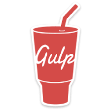

Главная
Главная
WEB-разработчик 2021
Освой все, что необходимо для создания web-сайтов и начни зарабатывать на этом!
Получить курс
Чему вы научитесь
Узнаешь основы web-разработки: что такое web-сайт, зачем он нужен, циклы создания и многое другое
Научишься работать с графикой для web'a, в том числе с SVG
Узнаешь основы JS и Jquery, научишься применять их в своих проектах
Научишься работать с Bootstrap 4 и с технологией FlexBox
Научишься создавать мобильную адаптацию сайтов и приложений
Поймешь, как создавать многостраничные сайты и принципы посадки под CMS(системы управления сайтами)
Научишься оптимизировать скорость работы сайтов и проводить валидацию верстки по стандартам w3c
Все полученные знания даются в современном формате и сразу закрепляются на практике
Научишься работать с графическими редакторами в контексте верстки: Photoshop, Zeplin, Figma, Avocode...
Узнаешь и поймешь как использовать HTML и CSS в реальных проектах (теория + настоящая практика)
Научишься работать с Git и GitHub
Научишься использовать препроцессоры Sass/Scss/Less в своих проектах
Научишься использовать методологию БЭМ
Научишься автоматизировать процессы при помощи планировщика задач Gulp
Научишься работать с множеством готовых плагинов, устанавливать гео-карты на сайте, работать со шрифтами и многое другое...
Бонус: получишь несколько реальных макетов для практики
Получить курс
Фрагмент из курса
Программа
1
Погружение в тему создания web продуктов. Изучение основ HTML CSS
Зачем нам этот модуль
Классификация сайтов
Установка и настройка редактора кода
Работа с Adobe Photoshop в вебе
Работа с современными редакторами: Avocode, Zeplin, Figma...
Бонус. Что такое "сетки" и преобразование иконок в SVG формат
Создаем свой первый проект. Основы HTML
Основные теги HTML на практике
Семантические теги HTML5
Основы CSS на практике
Блочная модель CSS
Developer Tool. Что это и как с ним работать?
Блочная модель CSS. Часть 2
Позиционирование элементов в CSS. Принцип карточной колоды
Выравнивание элементов по вертикали. Верстка таблицами и float'ами
Бонус. Единицы измерения CSS
Специфичность CSS селекторов
Практика. Создаем сайт на чистом HTML и CSS
Технология Flexbox и применение её на макете
Практика. Заканчиваем сайт на чистом HTML и CSS + домашнее задание
Сброс стилей reset.css/normalize.css
Подключение шрифтов на сайт
2
Ускорение работы в несколько раз
Зачем нам этот модуль
Библиотека Bootstrap 4
Про обновление Bootstrap до пятой версии
Практика. Новый проект с использованием сетки Bootstrap 4
Как правильно формировать пути к файлам
Препроцессоры. SASS/SCSS/LESS
Если у вас ошибка при компиляции SASS кода
Вендорные префиксы в CSS
Практика. Продолжаем работу и используем препроцессор SASS
Псевдоклассы и псевдоэлементы в CSS
Практика. Используем псевдоэлементы и псевдоклассы в проекте
Как работать с иконками. Иконочные шрифты
Адаптация проектов под различные устройства
Pixel Perfect верстк
Адаптация при помощи Bootstrap
Практика. Адаптация проекта. Часть 1
Практика. Адаптация проекта. Часть 2
Локальные ссылки и favicon
UX. Дорабатываем мелочи
Публикуем сайт в интернете. Домен. Хостинг. GitHub Pages и сброс "кеша"
3
Необходимые технологии для веб разработчика и продвинутая практика
Зачем нам этот модудь
Система контроля версий Git и сервис GitHub
Как работать с GitHub с разных компьютеров, gitignore и Git Kraken
Планировщик задач Gulp
Методология БЭМ
Практика. Создаем новый проект, используя Gulp, БЭМ...
Если у вас не работают картинки
Формы на сайтах
Знакомимся с языком программирования JavaScript
Как можно освоить JavaScript
Практика. Создаем слайдер на сайте. Slick-слайдер
Если у вас не работают скрипты
Практика. Альтернативные варианты слайдеров
Практика. Создаем табы на сайте. Часть 1
Практика. Создаем табы на сайте. Часть 2
Создаем интерактивные карты на сайте
Практика. Создаем модальные окна на сайте
Валидация форм
Маска ввода номера на сайте
Локальные сервера
Практика. Отправка писем с сайта
Если у вас ошибка при отправке формы
Плавный скролл по ссылкам и элемент "вверх"
Анимации на сайтах при помощи CSS3
Библиотеки для работы с анимациями
Про обновления и animate.css
Валидация сайта
Загружаем сайт на реальный хостинг. Настройка домена, что такое FTP и SSL
Оптимизация скорости загрузки сайта, доработка gulpfile
Используемые технологии

Получить курс